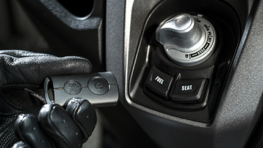

-
NMAX125 (ABS)
Open your New MAXimum. 전 세계 시장에서 큰 인기를 끌고 있는 125 스쿠터 NMAX의 신형 모델이 왔습니다. 수 많은 첨단 전자 제어 장비로 새롭게 무장한 신형 NMAX는 한국 전용 칼라(골드 휠)를 채용하고 새롭게 설계된 신형 프레임에는 유로 5 기준을 만족시키는 가변밸브 방식 블루코어 엔진이 탑재되어 있습니다. 기존의 이미지를 답습하면서도 헤드라이트를 비롯한 전 후면 등화류에 LED를 새로이 채용하고, MAX 시리즈 공통의 갈매기 형상 사이드 패널도 전용 설계되었습니다. 계기반 디스플레이도 칼라로 진화했으며, 기존 모델 때부터 호평을 받아온 2채널 ABS는 기본, 새로이 스마트키와 트랙션 컨트롤, DC 시가잭을 채용함으로써 안전성과 편의성이 대폭적으로 향상되었습니다. 또한 차량의 운전 상태와 라이더의 운행 스타일을 인터넷을 통해 전용 클라우드에 공유함으로써 엔진오일 교환시기나 배터리 상태 등을 스마트폰을 통해 실시간으로 받아보는 '야마하 모터사이클 커넥트(Y-Connect)' 한글버전 애플리케이션을 다운받으세요. 한계를 모르는 신형 NMAX를 만나보세요.
4,370,000 (VAT 포함)
TECHNICAL SPECIFICATION
| 형식 | 125cc, 4스트로크, SOHC, 4밸브, 수랭, 단기통 |
|---|---|
| 보어 X 스트로크 | 52.0mm X 58.7mm |
| 압축비 | 11.2 : 1 |
| 최고출력 | 9.0kw@8,000rpm |
| 최대토크 | 11.2Nm@6,000rpm |
| 트랜스미션 | V벨트 오토매틱 |
| 구동방식 | 벨트 |
| 프레임 | Backbone Steel |
|---|---|
| 서스펜션(앞) | Telescopic forks |
| 서스펜션(뒤) | Unit Swing |
| 브레이크(앞) | Hydraulic single disc, Ø 230 mm |
| 브레이크(뒤) | Hydraulic single disc, Ø 230 mm |
| 타이어(앞) | 110/70-13M/C |
| 타이어(뒤) | 130/70-13M/C |
Dimensions
| 길이 | 1,935㎜ |
|---|---|
| 넓이 | 740㎜ |
| 높이 | 1,160㎜ |
| 시트고 | 765㎜ |
| 휠베이스 | 1,340㎜ |
FEATURE BENEFITS

SMART KEY
사용자의 편리함을 고려하여 스마트키를 채용, 소지하는 것만으로 바이크 조작이 가능합니다
2채널 ABS와 TCS
국내 125cc에 최초로 2채널 ABS를 탑재하고 출시했던 NMAX125가 또 한번 세상을 놀라게합니다
TCS(Traction Control System) 시스템으로 리어휠의 미끄러짐 현상을 제어하여,
더욱 안전한 주행이 가능합니다.

STOP & START
정차 중 공회전 방지로 불필요한 에너지 방출과 열발생을 멈춰서 더욱
쾌적하고 경제적인 라이딩을 하실 수 있습니다.
EURO5 Blue core Engine
EURO 5 기준, 완전히 새롭게 설계 된 엔진은 더욱 강력한 고알피엠, 토크로 돌아왔습니다.
BLUE CORE(블루코어)란 달리는 즐거움과 연비, 환경성능을 높은 차원에서
실현하는 엔진 설계사상입니다. NMAX는 그 설계 사상에 따라 높은 연소효율,
높은 냉각성능, 동력손실 최소화라는 3대요소를 철저하게 추구했습니다.
Y-Connect
차량의 컨디션과 라이더의 운행 스타일을 인터넷을 통해 전용 클라우드에 공유함으로써
엔진오일 교환시기나 배터리 상태 등을 스마트폰을 통해 실시간으로 받아보는
'야마하 모터사이클 커넥트(Y-Connect)'가 국내에 NMAX를 시작으로 한글 애플리케이션이 동시 출시되었습니다.
안드로이드, IOS 기반 모두 사용 가능하며 각 앱 스토어에서 Y-Connect를 검색하여 주세요!
NEW Alarm System
방향지시등, 상향등, 오일부족, ECU 에러 등 기본적인 알람이 아닌 실시간으로 정보를
전달하는 NMAX는 Y-Connect를 활용하여 휴대폰의 문자, 전화알람과 함께 정확한 시간을
관측 데이터로 전달합니다.
VVA
중저속 토크를 중시한 저속 캠과, 고회전 출력을 추구한 고속 캠을 장착하고, 6,000rpm을 경계로
저속→고속으로 자동으로 캠이 전환하는 가변 밸브 타이밍 시스템(VVA)를 채용했습니다.
모든 회전역에 걸친 고른 동력성능과 효율적인 연소로 연비 향상에도 크게 기여하고 있습니다.

LED Light
포지션 LED 라이트 및 6발 LED 라이트로 더욱 선명한 시안성을 확보 하였으며, 강렬한 인상을 줍니다.
12V Cigar socket
12V 시거잭을 다양한 용도에 맞게 활용할 수 있으며, 깊은 수납포켓으로
개인물품을 담는데 유용합니다.
활용도 높은 수납공간
풀페이스 헬멧을 넣을 수 있는 트렁크 공간을 가지고 있으며,
프론트 수납공간에도 장갑 및 개인물품을 손쉽게 담을 수 있습니다.
| 홈페이지의 자료 및 이미지는 모두 예고 없이 상시 변경될 수 있으며, 간혹 오류 또는 부정확한 정보가 있을 수도 있습니다. 제품 구매 시 정확한 제품 사양 및 구매 조건은 구매처를 통해확인하시고 구입하시길 바랍니다. |
모터사이클 · 파츠 구매 및 문의사항근처 가까운 야마하 판매점에 문의하세요 |
|---|